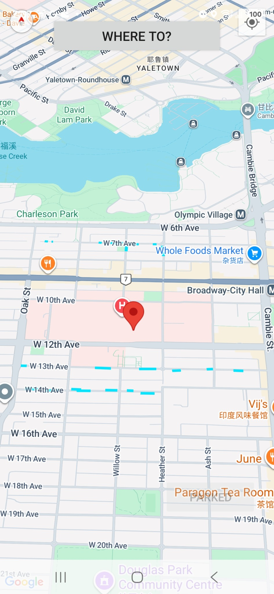
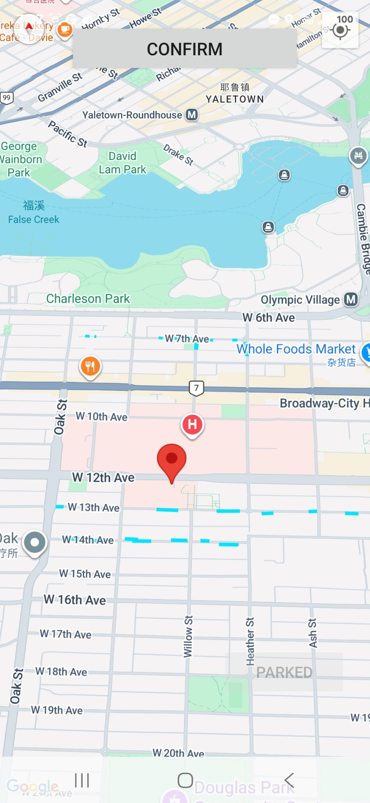
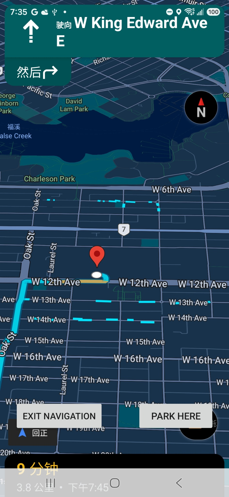
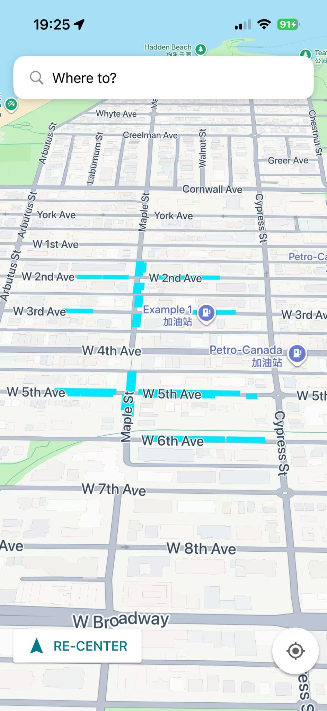
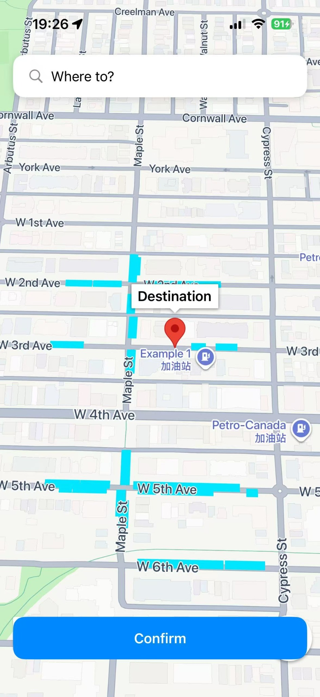
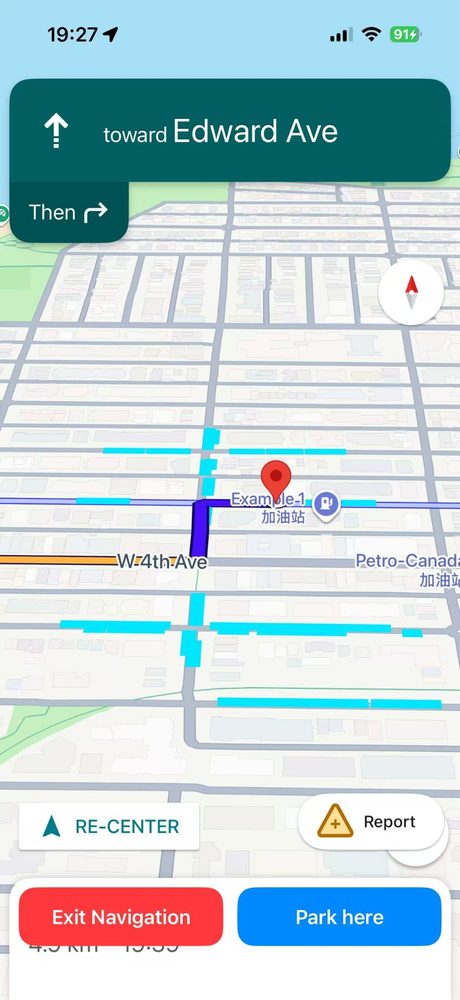

ParkFree
A mobile navigation prototype that shows free and time-limited street parking on Google Maps.
Project idea
Navigation apps are good at getting drivers to a destination, but finding street parking nearby can still take time. ParkFree adds parking information directly to the navigation map.
The goal is simple: while approaching a destination, the driver can see which nearby street segments may allow free or time-limited parking.
What it does
- Shows parking street segments on Google Maps.
- Searches destinations using Google Places.
- Supports selecting a destination by tapping the map.
- Starts real turn-by-turn Google Navigation.
- Keeps parking overlays visible during navigation.
- Records a parked location.
- Includes an Android developer survey mode for collecting parking segments with GPS.
Android



iOS



Technical notes
| Android | Kotlin |
|---|---|
| iOS | Swift |
| Map | Google Maps SDK |
| Navigation | Google Navigation SDK |
| Search | Google Places |
| Parking data | Coordinate segments stored in CSV |
Current status
The core workflow works on real Android and iOS devices. Parking coverage is still limited, and the parking data is being refined and collected independently.